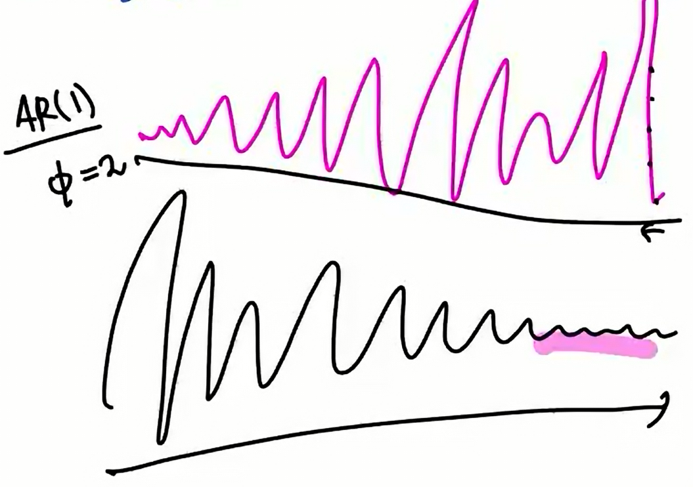

교재 5.2.4
Wold의 관찰
\(\begin{cases}X_t = p_t + z_t \\ z_t = \epsilon_t + \psi_1\epsilon_{t-1} + \psi \epsilon_{t-2} + \dots\end{cases}\)
\(\begin{align*}z_t &= 0.5z_{t-1} + \epsilon_t\\ &=\epsilon_t + 0.5\epsilon_{t-1} + 0.5^2 \epsilon_{t-2} + \dots \\ &= \sum_{i=1}^\infty \psi_j \epsilon_{t-j}\end{align*}\)
이를 \(MA(\infty)\), 무한 MA가정이라고 합니다.
- \(MA(1) : Z_t = \epsilon_t -\theta_1\epsilon_{t-1}\)
- \(MA(2) : Z_t = \epsilon_t -\theta_1\epsilon_{t-1}-\theta_2\epsilon_{t-2}\)
- \(\vdots\)
- \(MA(\infty)\) : \(Z_t = \epsilon_t -\theta_1\epsilon_{t-1} -\theta_2\epsilon_{t-2}-\dots\)
\(\psi_1 = -\theta_1 , \psi_2 =-\theta_2 \cdots\)
AR(1)
- \(|\phi|<1\)
\(AR(1):\)
\(Z_t = \phi Z_{t-1} + \epsilon_t \\ =\phi^2Z_{t-2} + \phi\epsilon_{t-1} + \epsilon_t\\ = \epsilon_t + \phi\epsilon_{t-1} +\phi^2\epsilon_{t-2} + \phi^3Z_{t-3}\\ = \epsilon_t + \phi\epsilon_{t-1} +\phi^2\epsilon_{t-2} + \phi^3Z_{t-3} + \phi^4Z_{t-4} \\ = \epsilon_t + \phi\epsilon_{t-1} +\phi^2\epsilon_{t-2} + \phi^3Z_{t-3} + \phi^4Z_{t-4} + \dots\\ \vdots\\ =\epsilon_t + \phi\epsilon_{t-1}+\phi^2\epsilon_{t-2}+\dots\)
- \(Z_{t-1}, Z_{t-2}, \dots, Z_{t-4},\dots\)가 안없어지잖아? 없어져야 의미가 있을 것 같은데
\(Z_t = \phi^2Z_{t-2} + \sum_{h=0}^{L-1}\phi^h\epsilon_{t-h}\)
\(Z_t = \sum_{h=0}^\infty \phi^h\epsilon_{t-h}\)
결국 \(\lim_{L\to\infty} \phi^LZ_{t-L} =0\) 이어야함.
\(|\phi| < 1, |Z_{t-2}|<M,\quad \phi^2M\underset{L\to\infty}{\to} 0\) 이럼 되는거 야니야 라고 생각할 수 있지만
\(Z_t\)가 연속적인 분포에서 뽑힌다면, 이론적으로 정규분포 같은애들은 무한히 큰 값이 나올 수 있잖아?
그런데 보이지 못함.. 좀 바꿔서 확률개념을 좀 섞어서
\(Z_t\)가 연속적으로 큰 값이 뽑힐 수는 있겠으나 그렇게 뽑히는 확률이 매우 적으니까
평균적인 값은 \(0\)으로 간다!
\(\lim_{L\to\infty}E[Z_t-\sum_{h=0}^L \phi^h \epsilon_{t-h}]^2 =0\)
평균적으로 \(0\)이라는 것은 \(Z_t \overset{L_2}{=} \sum_{h=0}^\infty \phi^h\epsilon_{t-h}\)1
결론은 \(Z_t=\sim\sim\sim\)에 있는 등호는 사실 진짜 등호가 아니라는 것을 이해하면 된다.
- \(|\phi|>1\)
이번에는 \(|\phi|>1\)인 AR(1) 모형을 생각해보자.
\(AR(1): Z_t = \phi Z_{t-1} + \epsilon_t, \quad |\phi|>1.\\ \lim_{L\to\infty} \phi^2 Z_{t-L}\)
\(\Rightarrow\)수렴하지 않는다.
\(Z_t = \sum_{h=0}^\infty \phi^h\epsilon_{t-h}.\) 이런식으로 표현할 수 없다.
\(Z_t = 2Z_{t-1} + \epsilon_t\\ \quad =\epsilon_t + 2\epsilon_{t-1} + 4\epsilon_{t-2} + 8\epsilon_{t-3} + \dots\)
이게 \(0\)으로 안가.. (분산이 터지잖아!)
\(Z_t = 2Z_{t-1}+\epsilon_t.\) 이 식을
\(Z_{t+1} = 2Z_t + \epsilon_{t+1}\) 이렇게 생각해보자.
$Z_t = Z_{t+1} + {t+1} \ ={t+1}+(Z_{t+2} + _{t+2})\ $
\(\quad Z_{t+1}=\frac{1}{2}Z_{t+2}+\frac{1}{2}\epsilon_{t+2}\) 얘를 대입한 것임.
\(\quad = \frac{1}{2}\epsilon_{t+1} + \frac{1}{4}Z_{t+2}+\frac{1}{4}\epsilon_{t+2}\)
\(\quad \overset{L_2}{=}\frac{1}{2}\epsilon_{t+1} + \frac{1}{4}\epsilon_{t+2} + \frac{1}{8}\epsilon_{t+3}+\dots\)
\(\phi=\frac{1}{2}\)인 정상시계열이랑 비슷한데?
\(Z_t = \epsilon_t + 0.5\epsilon_{t-1} + \dots\) 이 식은 지금 현재시점을 과거에서부터 이어온 시점으로 표현한 것인데
\(Z_t = \frac{1}{2}\epsilon_{t+1} + \frac{1}{4}\epsilon_{t+2} + \frac{1}{8}\epsilon_{t+3}+\dots\) 이런식으로 미래의 시점으로도 표현 가능하다.
결국 정상이라고 주장할 수 있는 상태가 됩니다!
- 현재시점을 미래시점으로 표현 (Stationary future dependent)
\(Z_t = 2Z_{t-1} + \epsilon_t, \quad \epsilon_t\overset{iid}{\sim} N(0,1)\)
\(\quad \overset{L_2}{=} \frac{1}{2}\epsilon_{t+1} + \frac{1}{4}\epsilon_{t+2} + \dots\)
Stationary 한데 미래값에 의존하여 stationary하다고 해서 Stationary future dependent AR(1) 모델이라고 합니다.
- 현재시점을 과거에서부터 이어온 시점으로 표현 (우리가 배우던 것)
\(Y_t = 0.5Y_{t-1} + \eta t, \quad \eta_t\overset{iid}{\sim} N(0,\frac{1}{4})\)
\(\quad \overset{L_2}{=}\eta_t + \frac{1}{2}\eta_{t-1} + \frac{1}{4}\eta_{t-2} + \dots\)
이건 그냥 stationary하다고 표현
- 이상한점과 새로운 관점
\(Z_t\)와 \(Y_t\)는 분포가 똑같게 된다.
그런데 \(Z_t\)는 비정상시계열이고 \(Y_t\)는 정상시계열이다. 이상한데?
\(Z_t, Y_t\)의 분포는 같은데 하나는 정상 하나는 비정상 이거 이상하다
여기서 새로운 개념이 등장하게 되는데
\(Z_t\)도 정상으로 보자는 것이다.
\(\overset{L_2}{=}\) 이런식으로 표현이 되면 정상으로 보자는 얘기다.
그렇게 되면 다 정상으로 되는 거 아닌가요? \(\to\) 아님. \(\phi=1\)일 때는 안됩니다!
\(\phi=1: \quad Z_t = \epsilon_t + \epsilon_{t-1} + \dots\)
그래서 \(\phi=1\)일 때를 제외하고는 AR을 다 stationary하다고 보는 사람들도 있음..
미래에서부터 시계열을 관찰한다면 정상시계열의 개념이 달라지지 않을까?

- [분홍] 갈수록 분산이 커져서 이건 비정상 시계열이네
- 검정: 뒤로갈수록 안정화되는 시계열로 보임.
그래서 미래에서보면 정상시계열로 보일 수 있다.
그래서 관점이 2개이다.
관점1에서는 \(Z_t = 2Z_{t-1} + \epsilon_t\)가 없는시계열
관점2에서는 \(Z_t = 2Z_{t-1} + \epsilon_t\) 쓸모가 없는 시계열.. (실제로는 미래를 예측하고 싶은거잖아..) - 인과성이 없다. (causality가 없다.) 과거에서 미래로 가야 원인/결과가 있을 건데..이건 그럴수가 없지
관점1 : 정상시계열 (과거에서부터 오는 정상만 인정) 에 관심
관점2 : causal & stationary. (미래에서부터 오는 정상도 인정) 에 관심
(참고) \(Y_t = 0.5Y_{t-1} + \eta t\) 이런걸 causal하다라고 한다.
결국 말은 다르지만 관심있는 건 같다라는 소리.
ㅇ아아아아아ㅏ악
invertable MA
\(Z_t = \epsilon_t -\theta_1\epsilon_{t-1} -\theta_2\epsilon_{t-2} -\dots -\theta_q\epsilon_{t-q}\)
\(MA(q)\) : 유한차수 MA는 정상시계열이 된다.
임의의 정상시계열 \(Z_t\)는
\(\begin{cases}Z_t=\psi_0\epsilon_t + \psi_1\epsilon_{t-1} + \dots\\ \sum|\psi_j|<\infty\end{cases}\)
유한 차수 MA니까 위와 같은 식으로 표현이 되고, 유한차수니까 절댓값을 취해서 다 더해봤자 \(\infty\)보다 작으니까 정상시계열
사실 MA모델과 AR모델은 표현상의 차이일 뿐!
- \(Z_t = \phi_1Z_{t-1} + \phi_2Z_{t-2} + \dots + \phi_pZ_{t-p}+\epsilon_t\) (MA식 표현)
- \(Z_t - \phi_1Z_{t-1} - \phi_2Z_{t-2} - \dots - \phi_pZ_{t-p}=\epsilon_t\) (AR식 표현)
- 예제
\(Z_t = \epsilon_t + 0.2\epsilon_{t-1}, \quad \epsilon_t \overset{iid}{\sim} N(0,25)\)
\(Y_t = \eta_t + 5\epsilon_{t-1}, \quad \eta_t \overset{iid}{\sim} N(0,1)\)
\(\gamma(h)=\begin{cases} 26 & h=0 \\ 5 & h=1 \\ 0 & h>1\end{cases}\)
여기서 \(\gamma(h)\) 는 covariance
\(cov(Z_t, Z_t) = cov(\epsilon_t + 0.2\epsilon_{t-1},\epsilon_t+0.2\epsilon_{t-1})\\ \qquad=V(\epsilon_t) + 0.2^2V(\epsilon_{t-1}) = 25 + 1\)
\(cov(Y_t,Y_t) = 25 + 1 = 26\)
둘 다 노말분포이고, 평균은 \(0\)으로 똑같으니까 covariance가 같으면 같은 분포를 갖는 것이므로 \(Z_t\) 와 \(Y_t\)는 같은 분포를 갖음.
유한차수 MA모델이니까 당연히 정상 모델인데 ACF가 똑같은 모델이 존재한다는 것.
정상이면서 ACF가 같은 모델이 2개있으니까 하나 버려!
결론적으로는 \(Y_t\)를 버린다. (두 정상시계열을 AR식 표현으로 나타냈을 때 \(Z_t\)는 causal하지만 \(Y_t\)는 그렇지 않다.)
즉, \(Y_t\)는 정상시계열이긴 한데 causal하지 않은 정상시계열인 것이죠.
이건 이제 AR식 표현이고,
MA식표현하면 invertable한 것에만 관심이 있는데, \(Z_t\)는 invertable, \(Y_t\)는 invertable 하지 않음을 의미.
즉, 버려진 \(Y_t\)는 invertable 하지 않은 애!
Summary
유한차수 MA모델은 항상 정상이다.
그런데 유한차수 MA모델은 무한차수 AR모델로 바꿀 수 있다. (이항하면 됨) 등호를 의미있게 만들려다 보니 어떤 것은 표현식이 causal한데 어떤건 causal하지 않다. causal하지 않다는 것은 invertable하지 않다라고 표현을 한다.
AR모델에서 causal한 것만 다루듯이 MA모델에서도 invertable 한것만 다룬다.
MA모델에서 가역성을 보이려면
\(Z_t = \epsilon_t - \theta_1\epsilon_{t-1} -\theta_2\epsilon_{t-2}-\dots -\theta_q\epsilon_{t-q}\\ \quad= (1-\mathbb{B}\theta_1 - \mathbb{B}^2\theta_2-\dots -\mathbb{B}^q\theta_q)\epsilon_t\)
위 식을 \(\mathbb{B}\) 에 대하여 풀고, \(\mathbb{B}\)의 모든 근의 절댓값이 \(1\)보다 큼을 보이면 됨. (=모든 근이 단위원 밖에 있다.)
MA모델은 AR모델의 거울같은 존재(duality)
ARMA
- \(Z_t - \phi_1Z_{t-1} -\dots -\phi_pZ_{t-p} \\ = \epsilon_t-\theta_1\epsilon_{t-1} - \dots -\theta_q\epsilon_{t-q}\)
ARMA(1,1)
- AR식, MA식 표현 모두 가능
\(Z_t -\phi Z_{t-1} = \epsilon_t-\theta_1\epsilon_{t-1}.\)
\(Z_t = \phi Z_{t-1} + \epsilon_t - \theta_1\epsilon_{t-1}.\)
우리가 관심있는 ARMA 모델: Stationary & intertable
- AR part만 봤을 때: Stationary (Causal Stationary)
- MA part만 봤을 때: invertable
Footnotes
여기서 같다라는 것은 평균적으로 같다는것을 의미.↩︎